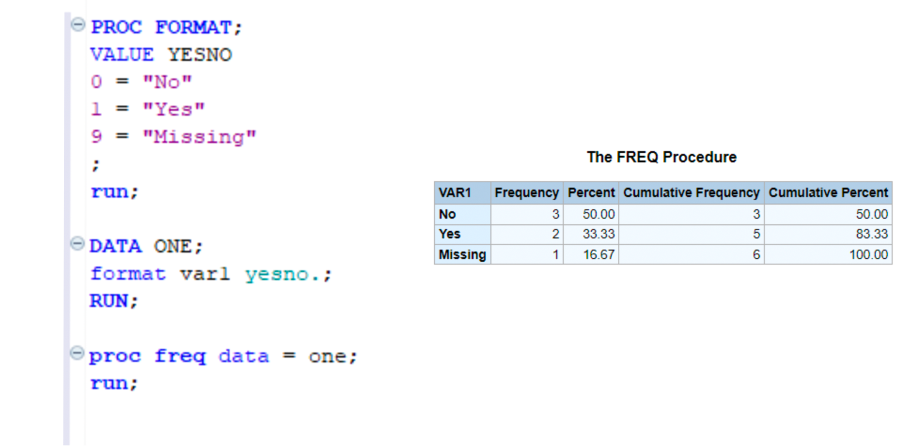
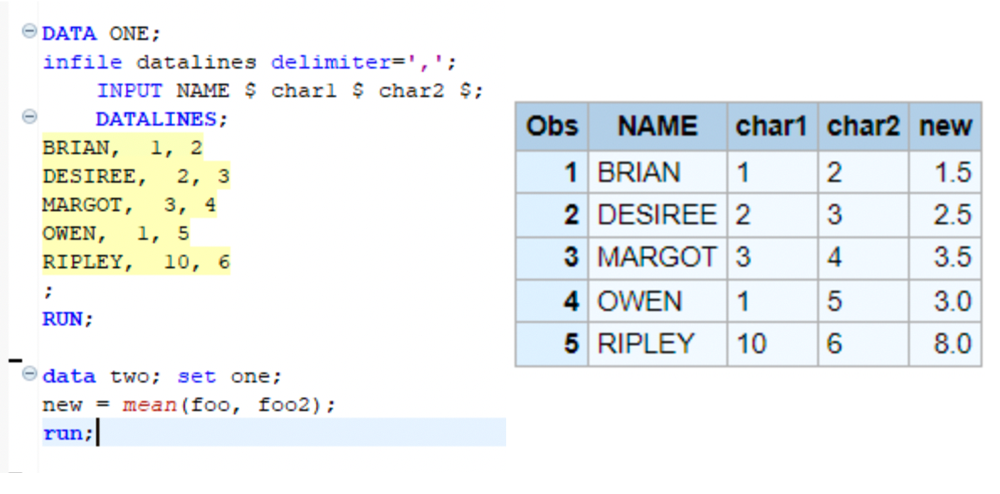

df |>
dplyr::mutate(var1 = factor(var1,
labels = c("No", "Yes", "Missing"))) |>
dplyr::count(var1) var1 n
1 No 3
2 Yes 2
3 Missing 1I spent most of my career as a lonely R programmer in a SAS group that was perpetually failing in its R migration. Changing direction in an organization is always difficult, and in this case the major push back came from non-technical study management staff who still needed SAS for their day to day processes.
These staff managed all of the raw study data coming into our research program. They imported messy questionnaire data from vendors and prepared it for the scientific staff to analyze. The SAS DATA step was their primary domain and they were understandably sensitive to any changes to their workflow that could risk the science.
I often thought that if I could simply translate all their macros, there would be no more excuse and we could cut the cord to SAS, but that strategy was never successful. I came to see that, for large swaths of data professionals, the DATA step was a safe place to do vital technical work. My SAS colleagues took courses in R and after learning the basics deemed the learning curve too steep to make the jump.
This is an entry in a series of blog posts aimed at companies and data professionals who want to make the jump from SAS to R. There are two aspects of the DATA step that promotes a mental model of data processing that make it difficult for SAS users to transition to R. These are the limited data types included in the DATA step and the mechanics of DATA step processing. I hope that fans of the DATA step will find a few strategies to help them along this journey.
The SAS DATA Step has exactly two data types: character and numeric. On its face, this seems like it would be a limitation of SAS, but in practice it is a feature. This simplified system includes reasonable defaults for coercion and type conversion, so users don’t often have to worry about the underlying types in their variables. This is in contrast to R where there are 6 atomic variable types that can be expanded and adapted across packages and use cases. The below table roughly maps the basic vector types in R to their corresponding SAS versions.
| SAS | R | Example |
|---|---|---|
| Numeric | Integer | 0L, 1L, 2L, 3L |
| Double (numeric) | 1.5, 1e10, -5.9 |
|
| Complex | 1.5i, 3+2i |
|
| Logical | TRUE/ FALSE |
|
| Character | Character | "I am a character string" |
| Raw | 01, ff |
SAS uses these two primary data types to create a wide variety of formats. SAS dates, for example, are simply a format overlayed on a numeric value representing the number of days relative to January 1st, 1960. This allows users to treat date values like any other number, but display correctly as a date. Users can also distinguish continuous vs categorical variables by adding a format to a numeric variable. Using PROC FORMAT will overlay the categorical values along with the order of the derived variable.
SAS users will find the R factor type to be the closest analog to a SAS format. The factor type is a categorical variable that can be ordered or unordered. SAS users often use formats to order variables for statistical models and reporting, and factor can be used for the same purpose in R.

df |>
dplyr::mutate(var1 = factor(var1,
labels = c("No", "Yes", "Missing"))) |>
dplyr::count(var1) var1 n
1 No 3
2 Yes 2
3 Missing 1SAS programmers often run into problems when trying to work with these vector types because SAS has incorporated coercion into more of their DATA step processes. SAS programmers don’t often have to think of these coercion processes. Take the following example. This sample data set uses character variables, char1 and char2 as character type, and I want to take a mean of them:
SAS is helpful and knows that char1 and char2 are numbers formatted as strings and automatically converts then for the mean()

In R, the mean() function does not coerce the character variables to numeric, so the user must do this manually. In this case, R has set new to missing.
one <- data.frame(NAME = c("BRIAN", "DESIREE", "MARGOT", "OWEN", "RIPLEY"),
char1 = c("1", "2", "3", "1", "10"),
char2 = c("2", "3", "4", "5", "6"))
one |>
dplyr::rowwise() |>
dplyr::mutate(new = mean(char1, char2))# A tibble: 5 × 4
# Rowwise:
NAME char1 char2 new
<chr> <chr> <chr> <dbl>
1 BRIAN 1 2 NA
2 DESIREE 2 3 NA
3 MARGOT 3 4 NA
4 OWEN 1 5 NA
5 RIPLEY 10 6 NATo be fair, there are also many examples of R incorporating coercion to help the user in their programming task. But the example demonstrates that R functions are designed to work on particular data types. As users go further into the R ecosystem, they will find that package developers have adapted the 6 basic vector types into a nearly unlimited series of types for which they have written specific functions. This kind of flexibility is a feature of R, shared with many programming languages, but it is a stumbling block for SAS users more accustomed to simple variable types.
The SAS DATA step operates on two sequential steps. The DATA step first completes a compilation phase where SAS scans the code for syntax errors, quickly alerting the user to missed semicolons and typos before translating the code into machine language. SAS then creates the program data vector (PDV), a temporary object where SAS builds a data set, one observation at a time. The PDV includes each of the final variables created by the DATA step with all attributes, including variable type, length, format, and label.
The program is then executed as a loop, with each row of the input data set processed individually and output to the PDV. If no errors are found in the observation, the result is output to a final data set. This process repeats until SAS finishes with the last observation or an error is identified.
Variable attributes are defined at two stages of the DATA step. Users can explicitly code any attribute: character variables can be created for a given length using the INPUT statement, formats and labels can be applied using FORMAT ad LABEL, respectively. Alternatively, SAS can infer these attributes by, typically by the initial or final attributes fed to the PDV.
R users may find this to be a very inefficient process, but it has its benefits. The basic unit of every SAS data frame is the observation and this is how SAS users are often thinking of their code. Let’s describe 2 examples that SAS users find commonplace that work very differently in R.
A typical workflow includes deriving variables based on other variables in the dataset. In this case, the user wants to add to variables. Since they are accustomed to SAS’s observation-based processing, they could choose the built-in sum() function to calculate the total, and this works as expected.
print("something else")For example, SAS users would derived a summary variable for each observation by summing three input variables: var = sum(var1, var2, var3);. Since SAS is operating on the observation level, this kind of process makes sense.
Let’s see how this looks in R:
iris |>
dplyr::mutate(Sum_Length = sum(Sepal.Length, Sepal.Width)) |>
dplyr::select(Sum_Length) |>
head() Sum_Length
1 1335.1
2 1335.1
3 1335.1
4 1335.1
5 1335.1
6 1335.1So why does R return a single value for each observation of the iris data? The sum() function, like most R functions, is vectorized, meaning that it operates on the entire homogeneous variable at once. This is a more efficient way to process data, but it requires the SAS programmer to transpose their mental model of the data frame. Rather than operating on each observation independently, the R programmer must thing about each variable vector as the fundamental processing unit.
The SAS DATA step splits its process into two independent compilation and executions steps. During compilation, SAS scans the code for syntax errors and then translates it into machine language. It then creates a Program Data Vector (PVD) initialized with variable names and attributes to match the desired data output. The program is the executed as a loop, with each row of the input data set being processed and output to the PVD. All variables and their types are determined during compilation; variable attributes are determined when processing the final observation.
On the face of things, this may seem like an inefficient way to process a data set; indeed, many SAS programmers are excited by how much faster R is at a given task, but it does have a few benefits. First, since the input and output data sets exist on disk, SAS programmers can manipulate large data.